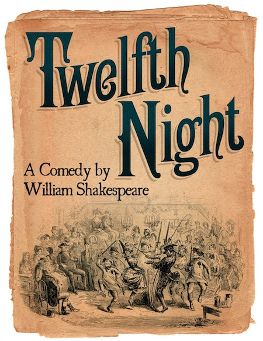
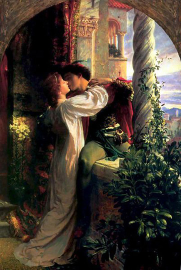
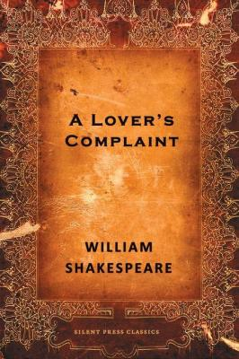
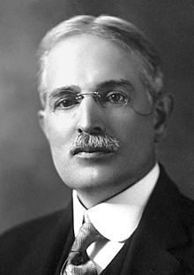

A. P. J. Abdul Kalam
Avul Pakir Jainulabdeen "A. P. J." Abdul Kalam Listeni/ˈæbdʊl kəˈlɑːm/; (15 October 1931 – 27 July 2015) was the 11th President of India from 2002 to 2007. A career scientist turned statesman, Kalam was born and raised in Rameswaram, Tamil Nadu, and studied physics and aerospace engineering. He spent the next four decades as a scientist and science administrator, mainly at the Defence Research and Development Organisation (DRDO) and Indian Space Research Organisation (ISRO) and was intimately involved in India's civilian space programme and military missile development efforts.[1] He thus came to be known as the Missile Man of India for his work on the development of ballistic missile and launch vehicle technology.[2][3][4] He also played a pivotal organisational, technical, and political role in India's Pokhran-II nuclear tests in 1998, the first since the original nuclear test by India in 1974.[5]
See More

Twelfth Night
Twelfth Night, or What You Will[1] is a comedy by William Shakespeare, believed to have been written around 1601–02 as a Twelfth Night's entertainment for the close of the Christmas season. The play centres on the twins Viola and Sebastian, who are separated in a shipwreck. Viola (who is disguised as a boy) falls in love with Duke Orsino, who in turn is in love with the Countess Olivia.
See More

Romeo and Juliet
Romeo and Juliet is a tragedy written by William Shakespeare early in his career about two young star-crossed lovers whose deaths ultimately reconcile their feuding families. It was among Shakespeare's most popular plays during his lifetime and, along with Hamlet, is one of his most frequently performed plays. Today, the title characters are regarded as archetypal young lovers.
See More

A Lover's Complaint
"A Lover's Complaint" is a narrative poem published as an appendix to the original edition of Shakespeare's Sonnets. It is given the title "A Lover's Complaint" in the book, which was published by Thomas Thorpe in 1609.
Although published as Shakespeare's work, the poem's authorship has become a matter of critical debate. The majority opinion is that it is by Shakespeare, though of inferior quality to his other works.
See More
The Secret Agent
The Secret Agent: A Simple Tale is a novel by Joseph Conrad, published in 1907.[1] The story is set in London in 1886 and deals with Mr. Adolf Verloc and his work as a spy for an unnamed country (presumably Russia). The Secret Agent is one of Conrad's later political novels in which he moved away from his former tales of seafaring.
See More

Theodore William Richards
Theodore Richards was born in Germantown, Philadelphia, Pennsylvania to William Trost Richards, a land- and seascape painter, and Anna née Matlack, a poet. Richards received most of his pre-college education from his mother. During one summer's stay at Newport, Rhode Island, Richards met Professor Josiah Parsons Cooke of Harvard, who showed the young boy Saturn's rings through a small telescope. Years later Cooke and Richards would work together in Cooke's laboratory.
See More